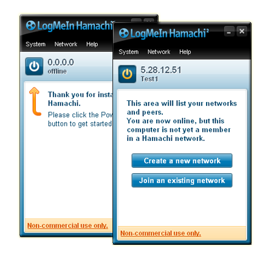

Craft Your Own Minecraft Server


Create minecraft servers quickly and easily.
Available on Windows and Linux OS.


Quick Setup
In this tutorial, you will learn to setup your own minecraft server from scratch using CYOMS and LogMeInHamachi.
Step #1 - Installation & Setting Up
Download the latest version of CYOMS and make sure you have all the prerequisites installed
Prerequisites
1. Latest Java Development Kit (JDK) - Download Now
2. Minumum 150 MB Hard Disk Space
3. Minimum Intel Core 2 Duo or AMD Athlon 64 x2
Step #2 - Hamachi Setup [Optional]
Server can be setup on a local / cloud hosted machine, in this case we will be setting up a server on our local machine to play with friends.
To avoid network configuration complications like port forwarding, we will be using LogMeInHamachi, a Virtual Private Network (VPN) Application to establish easy connection
Download LogMeInHamachiAfter installation, create an account in LogMeInHamachi and after login, the following screen will appear:
After Powering on, you will get your hamachi IP address in place of '0.0.0.0', in the above case "5.28.12.51" is the hamachi ip (Your Hamachi IP will be different)
Note Down The Hamachi IP as it will be required in the further steps
Next, you have to create a new hamachi network, where you will be asked to set a Network ID and Password. Share these credentials with your friends and ask them to join your network ^_^.
Step #3 - Crafting The Server
1 ) Open CYOMS and click on 'Craft Vanilla Server'
Using the Graphical User Interface (GUI), you can configure the entire server.
If you are using Hamachi, make sure to replace the 'IP Address' field with your Hamachi IP Address
2 ) Select the server path and craft the server
If you get unsuccessful message at this stage, feel free to contact us at assist.cyoms@gmail.com
3) Running and testing the serverCongratulations!, you have now successfully created a minecraft server
Make sure to use the Hamachi IP address instead of Local IP if you are using LogMeInHamachi, share the IP address with your friends who are in your hamachi network
Social Media
Follow CYOMS on social media to be in touch with latest updates